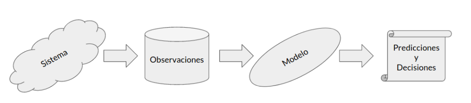

24. Introducción y fundamentos#
24.1. Mundo de datos#
Los avances tecnológicos recientes nos permiten medir, almacenar y transmitir datos de toda índole
Por ejemplo
Datos comerciales y bancarios
Datos de operaciones industriales
Datos públicos y gubernamentales
Datos científicos y médicos
Datos de redes sociales
Datos de dispositivos: Smart-hardware e Internet de las cosas
Sin embargo los datos crudos tienen poco valor.
Debemos extraer información a partir de los datos si queremos tener el conocimiento para tomar las mejores decisiones
Este proceso se resume conceptualmente en el siguiente diagrama conocido como el modelo Data-Information-Knowledge (DIK)

Nuestros datos son mediciones u observaciones de un sistema o proceso que queremos analizar. En base a nuestros datos podemos proponer y ajustar un modelo para nuestro sistema. Luego podemos utilizar el modelo para hacer predicciones y tomar decisiones
Este proceso se resume en el siguiente diagrama
{kind=link}
Considere por ejemplo el censo de Chile
El censo son las observaciones de un sistema: La población de Chile
En base a los datos obtenidos a través de múltiples censos podríamos crear un modelo para la evolución de la población en una ciudad o región
Usando el modelo podríamos intentar predecir el crecimiento poblacional en un cierto horizonte de años
Esta predicción puede servir como sustento para desarrollar políticas públicas (tomar decisiones)
24.2. Sistemas, modelos e incertidumbre#
Podemos intentar clasificar los sistemas en base a su comportamiento:
Un sistema determinista está gobernado por reglas que nos permiten calcular exactamente su estado final dado un cierto punto de partida o condición inicial
Un sistema estocástico tiene un componente aleatorio, incluso usando la misma condición inicial el estado final puede ser distinto
En general todos los sistemas complejos del mundo real tienen uno o más componentes aleatorio. Consideremos que
Las condiciones naturales varían constantemente
Los sensores y los equipos de medición están sujetos a ruido
Por ende para hacer predicciones en sistemas complejos debemos manejar su incerteza
La incerteza puede tener distintos orígenes. En este apartado revisamos los tres orígenes más comunes
Incerteza inherente o propia
Se refiere a sistemas que son naturalmente inciertos. Por ejemplo, si estoy analizando sistemas de partículas, estoy sujeto al principio cuántico de incertudimbre
Este tipo de incerteza es en general irreducible
Incerteza debido a un modelo imperfecto
Ciertos supuestos o aproximaciones de nuestros modelos pueden introducir incerteza. Por ejemplo un modelo demasiado simple o mal calibrado puede introducir ruido en nuestras predicciones
Podemos disminuir este tipo de incerteza mejorando nuestro modelo
Incerteza debido a observaciones imperfectas
En este caso la incertidumbre puede deberse a que
nuestras observaciones del sistema son incompletas o parciales
nuestros sensores son imperfectos e introducen ruido
En ambos casos lo que observamos no es una representación perfecta del sistema
Podemos disminuir este tipo de incerteza capturando más datos, mejorando la calidad de nuestros sensores y/o haciendo mediciones que sean representativas del sistema completo
24.3. ¿Qué es la Estadística?#
La estadística es la disciplina científica dedicada al desarrollo y estudio de métodos para recopilar, analizar y extraer información de los datos. La estadística busca
Describir fenómenos complejos a partir de observaciones parciales
Inferir propiedades de una población o sistema basándonos en una muestra
Usar datos para responder preguntas y tomar decisiones
El trabajo estadístico se puede resumir en el siguiente ciclo

En este capítulo estudiaremos técnicas de estadística descriptiva e inferencial (pasos 3 y 4 del diagrama) y las aplicaremos usando scipy.stats y numpy.random
24.4. Fundamentos de teoría de probabilidades#
La Teoría de Probabilidades es la rama de las matemáticas que estudia los fenómenos aleatorios. Considere las siguientes definiciones
- Variable aleatoria (VA)
Variable que asignamos al resultado de un fenómeno o experimento aleatorio
- Soporte o dominio
Espacio de valores posibles que puede tomar una VA
- Evento/Realización
Corresponde al resultado de observar una VA
- Probabilidad de un evento
Valor en el rango \([0, 1]\) que indica que tan posible (o que tan cierto) es que el evento ocurra
En general se utilizan letras mayúsculas para denotar VAs y letras minúsculas para denotar sus realizaciones. Además usaremos la notación
para indicar que \(x\) es una realización de la VA \(X\), o dicho de otro modo que \(x\) es el resultado de muestrear \(X\)
Ejemplo: El lanzamiento de una moneda es un experimento con resultado aleatorio

Sea \(M\) el resultado de lanzar la moneda. Esta VA binaria tiene dos posibles resultados: ‘cara’ y ‘cruz’.
Si la moneda no está “trucada” entonces podríamos esperar que la probabilidad de estos resultados es
Este conjunto de probabilidades corresponde a la distribución de \(M\)
Ver también
En la lección siguiente estudiaremos más en profunidad sobre distribuciones de probabilidad
Interpretación (frecuentista) de probabilidad
La definición matemática clásica de la probabilidad de un evento asociado a una VA es
el cociente entre la cantidad de ocurrencias del evento y la suma de la cantidad de todos los eventos posibles
es decir, la frecuencia relativa del evento
Ejemplo: Lanzamos la moneda del ejemplo anterior \(5\) veces y registramos \([\text{cruz}, \text{cruz}, \text{cara}, \text{cruz}, \text{cara}]\). Es decir que la frecuencia de \(\text{cruz}\) es 3 y la frecuencia de \(\text{cara}\) es 2. El total de realizaciones es \(5\), luego las frecuencias relativas son \(3/5\) y \(2/5\), respectivamente